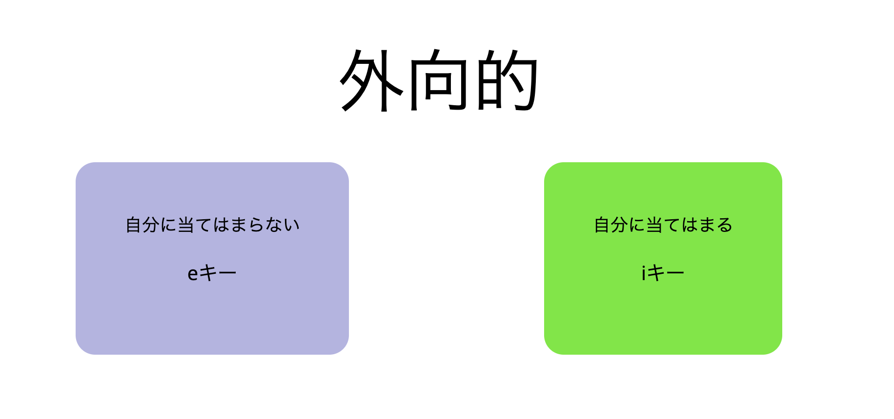

<!DOCTYPE html>
<html lang="en">
<head>
    <meta charset="UTF-8">
    <script src="../jspsych/dist/jspsych.js"></script>
    <script src="../jspsych/dist/plugin-html-keyboard-response.js"></script>
    <script src="../jspsych/dist/plugin-survey.js"></script>
    <script src="../jspsych/dist/plugin-survey-text.js"></script>
    <script src="../jspsych/dist/plugin-survey-multi-choice.js"></script>
    <script src="../jspsych/dist/plugin-survey-likert.js"></script>
    <script src="../jspsych/dist/plugin-external-html.js"></script>
    <script src="../jspsych/dist/plugin-instructions.js"></script>
    <script src="../jspsych/dist/plugin-fullscreen.js"></script>
    <script src="../jspsych/dist/plugin-html-button-response.js"></script>
    <script src="./likert.js"></script>
    <script src="./rrm_instruction.js"></script>
    <script src="./user_info.js"></script>
    <script src="./consent.js"></script>
    <link rel="stylesheet" href="../jspsych/dist/jspsych.css" />
    <link rel="stylesheet" href="./index.css" />
    <link rel="stylesheet" href="./survey.css" />
    <!-- <link rel="stylesheet" href="https://unpkg.com/@jspsych/plugin-survey@0.2.1/css/survey.css"> -->


    <title>RRMdemo</title>
</head>
<body>
</body>
<script>
  const jsPsych = initJsPsych({
    on_finish: () => {
        jsPsych.data.displayData();
    }
  })

  const enter_fullscreen =  {
  type: jsPsychFullscreen,
  message: 'これより実験を開始します。<br>準備ができたら「開始」ボタンを押して先に進んでください。<br>*「次へ」ボタンを押すと, 画面がフルスクリーンモードに切り替わります。<br>',
  fullscreen_mode: true,
  button_label: '開始'
}

const exit_fullscreen =  {
  type: jsPsychFullscreen,
  fullscreen_mode: false,
  delay_after: 0
}

const finish_page = {
  type: jsPsychHtmlButtonResponse,
  stimulus: '実験のご協力誠にありがとうございました。<br>*「終了」ボタンを押して, フルスクリーンを終了させてください。<br>',
  choices: ['終了']
}

  const survey = {
  type: jsPsychSurvey,
  pages: [
      [
      {
        type: 'text',
        prompt: '年齢を入力してください',
        name: 'age',
        required: true
      },
      {
        type: 'multi-choice',
        prompt: '性別を選択してください',
        options: ['男性', '女性', 'その他'],
        name: 'sex',
        required: true
      },
    ],
  ],
  title: '下記の項目に回答してください。',
  button_label_finish: '次へ',
};

const createLikert1 = (question, name, q_type) => {
  const likert = {
      type: 'likert',
      prompt: question,
      likert_scale_min_label: '全く当てはまらない',
      likert_scale_max_label: '非常に当てはまる',
      likert_scale_values: [
        {value: 1},
        {value: 2},
        {value: 3},
        {value: 4},
        {value: 5},
        {value: 6},
        {value: 7},
      ],
      name: name,
      q_type: q_type
  };
  return likert;
}
const createLikert2 = (question, name, q_type) => {
  const likert = {
      type: 'likert',
      prompt: question,
      likert_scale_min_label: '全くそうではない',
      likert_scale_max_label: '非常にそうだ',
      likert_scale_values: [
        {value: 1},
        {value: 2},
        {value: 3},
        {value: 4},
        {value: 5}
      ],
      name: name,
      q_type: q_type
  };
  return likert;
};


const likert_scale1 = ['1 <br>全くあてはまらない', '2 <br>ほとんどあてはまらない', '3 <br>あまりあてはまらない', '4<br>どちらともいえない', '5 <br>ややあてはまる', '6<br>かなりあてはまる', '7 <br>非常によくあてはまる']
const likert_scale2 = ['1 <br>全くそうではない', '2 <br>そうでない', '3 <br>どちらでもない', '4<br>そうだ', '5 <br>非常にそうだ']

const likert_instruction1 = {
  type: jsPsychInstructions,
  pages: [
    '<div style="font-size: 20px"><p>これから質問紙調査を行います。</p> <p>1(全くあてはまらない)〜 5 (非常にそうだ)の中から最も近いもの選択してください。</p> <p>質問項目は全部で60項目となります。</p><p>準備ができたら次に進んで、回答を開始してください。</p></div>',
  ],
  show_clickable_nav: true,
  button_label_previous: '戻る',
  button_label_next: '次へ'
}
const likert_instruction2 = {
  type: jsPsychInstructions,
  pages: [
    '<div style="font-size: 20px"><p>これから質問紙調査を行います。</p> <p>1(全くあてはまらない)〜 7 (非常によく当てはまる)の中から最も近いもの選択してください。</p> <p>質問項目は全部で24項目です。</p><p>準備ができたら次に進んで、回答を開始してください。</p></div>',
  ],
  show_clickable_nav: true,
  button_label_previous: '戻る',
  button_label_next: '次へ'
}

const bidr_likert = {
  type: jsPsychSurvey,
  pages: [
    [
      createLikert1('1. 私は自分で決めたことを後悔しない。', 's1', 'N'),
      createLikert1('2. 他人には言えないようなことをしたことがある。', 'i1', 'R'),
      createLikert1('3. 人をうまく利用したことがある。', 'i3', 'R'),
      createLikert1('4. 自分で決心したことが他人の意見で変わることはめったにない。', 's3', 'N'),
      createLikert1('5. 私は自分の人生を完全に思い通りに進めている。', 's5', 'N'),
      createLikert1('6. 人をののしったことがない。', 'i5', 'N'),
      createLikert1('7. 私のことを他人が本当にどう思っているのか気にならない。', 's7', 'N'),
      createLikert1('8. 仮病で仕事や学校を休んだことがある。', 'i7', 'R'),
      createLikert1('9. 人と争ったとき，水に流すよりもむしろ復しゅうする。', 'i9', 'R'),
      createLikert1('10. 自分でなぜ自分がそうしたのか，自分でも分からないときがある。', 's9', 'R'),
      createLikert1('11. 私が感じた他人の第一印象はよく当たっている。', 's11', 'N'),
      createLikert1('12. お釣りを多くもらったとき，気づいてもそのまま受け取ってしまう。', 'i11', 'R'),
    ],
    [
      createLikert1('13. 必要であれば，時々は嘘をつく。', 'i2', 'R'),
      createLikert1('14. 私は自分の判断をいつも信じている。', 's2', 'N'),
      createLikert1('15. 友達の陰口を言ったことがある。', 'i4', 'R'),
      createLikert1('16. 「なぜそれが好きなのですか？」と聞かれた時，何についても説明できる。', 's4', 'N'),
      createLikert1('17. かなりよくない習慣をいくつか持っている。', 'i6', 'R'),
      createLikert1('18. たとえ何人かの人に嫌われても，私にとっては問題ない。', 's6', 'N'),
      createLikert1('19. 道路や公共の場所で，ごみを落としたことはない。', 'i8', 'N'),
      createLikert1('20. 時々，すぐに決心できなくて失敗することがある。', 's8', 'R'),
      createLikert1('21. 私は恐らく捕まらないような時でも，いつも法律に従っている。', 'i10', 'N'),
      createLikert1('22. いろいろなことについて，つい余計なことを考える。', 's10', 'R'),
      createLikert1('23. 図書館の本や店の商品を破損した時は，必ずそれを報告する。', 'i12', 'N'),
      createLikert1('24. 私はきわめて理性的な人間である。', 's12', 'N'),
    ]
  ],
  button_label_next: '次へ',
  button_label_back: '戻る',
  button_label_finish: '終了'
}


const big5_likert = {
  type: jsPsychSurvey,
  pages: [
    [
      createLikert2('1. 人と話すのがとても楽しい', 'e1', 'N'),
      createLikert2('2. 私は心配性ではない。', 'n1', 'R'),
      createLikert2('3. どんなことでも現実的に考え、空想や夢のような考えを避けるように努めている。', 'o1', 'R'),
      createLikert2('4. 持ち物をきちんとし、きれいにしている。', 'c1', 'N'),
      createLikert2('5. 一人でやるゲームでは、時々ずるをする。', 'c6', 'R'),
      createLikert2('6. 人の考えを皮肉っぽく疑いの目で見がちだ。', 'a1', 'R'),
      createLikert2('7. 私はいつも何かしている。', 'e6', 'N'),
      createLikert2('8. 自分はまったく価値がないと感じることが時々ある。', 'n6', 'N'),
      createLikert2('9. 私はすぐに笑う', 'e12', 'N'),
      createLikert2('10. 私を冷たく計算高いと見ている人がいる。', 'a6', 'R'),
      createLikert2('11. いったんうまくいくと思ったら、あくまでもそのやり方を変えない。', 'o6', 'R'),
      createLikert2('12. 元気で、はつらつとした人間だ。', 'e11', 'N'),
    ],
    [
      createLikert2('13. 恐ろしいとか、不安だとか感じることはめったにない。', 'n2', 'R'),
      createLikert2('14. どうしようもなくて、その問題を誰かに解決してもらいたいと思うことがよくある。', 'n11', 'N'),
      createLikert2('15. ほうっておけば、たいていの人は私を出し抜こうとするだろう。', 'a2', 'R'),
      createLikert2('16. 大勢の人と一緒にいるのが好きだ。', 'e2', 'N'),
      createLikert2('17. 空想にふけって時間を無駄にするのは好きではない。', 'o2', 'N'),
      createLikert2('18. 几帳面ではない。', 'c2', 'R'),
      createLikert2('19. 非常に活発的な人間だ。', 'e7', 'N'),
      createLikert2('20. 私はいつも他の人を思いやる人間であろうとしている。', 'a7', 'N'),
      createLikert2('21. 明確な目標を持っており、それに向かって整然としたやり方で取り組んでいる。', 'c7', 'N'),
      createLikert2('22. 新しい、珍しい食べ物を試してみることがよくある。', 'o7', 'N'),
      createLikert2('23. 悲しくなったり、落ち込んだりすることはほとんどない。', 'n7', 'N'),
      createLikert2('24. ストレスが多いと、自分がめちゃくちゃになるように感じることもある。', 'n12', 'N'),
    ],
    [
      createLikert2('25. 芸術作品や自然の中で見つけた形に興味をひかれる。', 'o3', 'N'),
      createLikert2('26. 学生に対しては、いろいろな意見や考え方があることを教えるのではなく、一つの考え方を教えるだけで十分だ。', 'o11', 'R'),
      createLikert2('27. よく緊張したり神経過敏になったりする。', 'n3', 'N'),
      createLikert2('28. 何かする場合は一人でやる方が好きだ。', 'e3', 'N'),
      createLikert2('29. 自分の望むものを手に入れるためなら、人を操ることもためらわない。', 'a3', 'R'),
      createLikert2('30. 人は私のことを、きちんとした人間だと思っていない。', 'c3', 'R'),
      createLikert2('31. 抽象的な考えや理論を楽しむことがよくある。', 'o8', 'N'),
      createLikert2('32. 自分の目標を達成するようにがんばる。', 'c8', 'N'),
      createLikert2('33. 物事がうまくいかないと、がっかりしてあきらめたくなることがよくある。', 'n8', 'N'),
      createLikert2('34. 活気のある所にいるのが好きだ。', 'e8', 'N'),
      createLikert2('35. 私はほとんどの人から好かれている。 ', 'a8', 'N'),
      createLikert2('36. 道徳的な判断は、昔からある基準に基づくべきだ。', 'o12', 'R'),
    ],
    [
      createLikert2('37. 人の先頭に立つよりも、むしろ我が道を行く方が良い。', 'e4', 'R'),
      createLikert2('38. 身を入れて仕事を始めるまでに、時間がかかる。', 'c11', 'R'),
      createLikert2('39. 人の仕打ちによく腹を立てる。', 'n4', 'N'),
      createLikert2('40. 詩を読んでもなにも感じない。', 'o4', 'R'),
      createLikert2('41. 私のことを、自分勝手で自分のことしか考えない人間だと思っている人がいる。', 'a4', 'R'),
      createLikert2('42. 割り当てられた仕事を、すべてきちんとやるよう努めている。', 'c4', 'N'),
      createLikert2('43. 穴があったら入りたいと思うほど、恥ずかしいことがたまにある。', 'n9', 'N'),
      createLikert2('44. 宇宙の本質や、人類が置かれている状態に思いをめぐらすことにはほとんど興味がない。', 'o9', 'R'),
      createLikert2('45. 楽天家ではない。', 'e9', 'R'),
      createLikert2('46. やることすべてにおいて、志を高く持ってがんばる。', 'c9', 'N'),
      createLikert2('47. 人と張り合うよりも協力しあう方が好きだ。', 'a9', 'N'),
      createLikert2('48. バリバリと仕事をやって、それをやり遂げる。', 'c12', 'N'),
    ],
    [
      createLikert2('49. 人の期待にそったり、約束を守ったりしなければならないのに、時々そうではない。', 'c5', 'R'),
      createLikert2('50. 家族や同僚とよく口論をする。', 'a11', 'R'),
      createLikert2('51. 場所が変わると気分や気持ちが変わるものだが、私は気分が変わったとは感じない。', 'o5', 'R'),
      createLikert2('52. 私は誰にでも好意を持って接しようとする。', 'a5', 'N'),
      createLikert2('53. 元気があふれて、じっとしていられないことがよくある。', 'e5', 'N'),
      createLikert2('54. さびしくなったり、憂うつになったりすることはめったにない。', 'n5', 'R'),
      createLikert2('55. 特にほがらかな人間ではない。', 'e10', 'R'),
      createLikert2('56. 嫌いな人には、そう知らせてやる。', 'a10', 'R'),
      createLikert2('57. 知的好奇心が強い。', 'o10', 'N'),
      createLikert2('58. 劣等感を持つことがよくある。', 'n10', 'N'),
      createLikert2('59. 時間どおりに物事をやり終えるよう、自分のペースを守るのが得意だ。', 'c10', 'N'),
      createLikert2('60. 私は現実的で、情では動かない。', 'a12', 'R'),
    ]
  ],
  button_label_next: '次へ',
  button_label_back: '戻る',
  button_label_finish: '終了',
  randomize_statement_order: true
}

const createTrial = (stim) => {
    const trial = {
      type: jsPsychHtmlKeyboardResponse,
      stimulus: `<p style="font-size: 70px"> ${stim}</p>`,
      choices: ['e', 'i'],
      post_trial_gap: 100,
      prompt: "<div style='display:flex;' ><div class='choice1'>自分に当てはまらない<br><p>eキー</p></div><div class='choice2'>自分に当てはまる<br><p>iキー</p></div></div>"
  };
    return trial;
  };

const createInstruction = (num) => {
  const instruction = {
    type: jsPsychHtmlKeyboardResponse,
    stimulus:  `<div class="bold">これより本番ブロック ${num}を開始します。` +
    '<br>もし自分にあてはまるなら「i」キーを' +
    '自分に当てはまらない場合は「e」キーを' +
    'なるべく早く，正確に押してください' +
    '<br>準備ができたらスペースキーを押して課題を開始してください。</div>',
    choices: [' '],
    data: { task: 'instruction' },
  };
  return instruction;
}


const pre_instruction1 = {
    type: jsPsychInstructions,
    pages: [
      '次の課題では以下に示すようにある形容詞が提示され、それが自身に当てはまるかどうか分類することが求められます。',
      '下記の例のようにもし自身に当てはまるなら「i」キー (自分に当てはまる)をもし当てはまらないなら「e」キー(自分に当てはまらない)を押してください。<br>',
      '<p>注意事項 </p> <p>速く反応ができるようにするために、「e」と「i」のキーの上に予め人差し指を置いて下さい。</p> <p>反応が遅すぎる場合には、テストの結果を示すことができません。正確に回答することに努めながらも、できるだけ速く反応するようにして下さい。</p> <p>ブロックは全部で５つあります。</p>'
    ],
    show_clickable_nav: true,
    button_label_previous: '戻る',
    button_label_next: '次へ',
    show_page_number: true
  }

  const pre_instruction2 = {
    type: jsPsychHtmlKeyboardResponse,
    stimulus: '<div class="bold">これより練習ブロックを開始します。<br>' +
    '<div class="bold">もし自分にあてはまるなら「i」キーを<br>' +
    '自分に当てはまらない場合は「e」キーを<br>' +
    'なるべく早く，正確に押してください<br></div>' +
    '準備ができたらスペースキーを押して課題を開始してください。</div>',
    choices: [' '],
    data: { task: 'instruction' },
  };

  const fake_instruction1 = {
    type: jsPsychInstructions,
    pages: [
      'これより本番ブロックAを始めます。ただし、次の提示を想定しながら回答をしてください。',
      '<p><div class="bold">1.自分が入社したいと思う理想的な企業を思い浮かべてください</div></p> <p>*上記を想定することができたら「次へ」を押してください</p> ',
      '<div class="bold">2.これから、先ほどイメージした理想的な企業の適性検査に参加することを想定してください。</div> <p>*上記を想定することができたら「次へ進む」を押してください</p> ',
      '<p>注意事項 </p> <p>速く反応ができるようにするために、「e」と「i」のキーの上に予め人差し指を置いて下さい。</p> <p>反応が遅すぎる場合には、テストの結果を示すことができません。正確に回答することに努めながらも、できるだけ速く反応するようにして下さい。</p>'
    ],
    show_clickable_nav: true,
    button_label_previous: '戻る',
    button_label_next: '次へ',
    show_page_number: true
  };

  const fake_instruction2 = {
    type: jsPsychHtmlKeyboardResponse,
    stimulus:  '<div class="bold">これより本番ブロックを開始します。<br>' +
    'もし自分にあてはまるなら「i」キーを<br>' +
    '自分に当てはまらない場合は「e」キーを<br>' +
    'なるべく早く，正確に押してください<br>' +
    '準備ができたらスペースキーを押して課題を開始してください。</div>',
    choices: [' '],
    data: { task: 'instruction' },
  };

  const honest_instruction1 = {
    type: jsPsychInstructions,
    pages: [
      'これより本番ブロックBを始めます。ただし、次の提示を想定しながら回答をしてください。',
      '<div class="bold">できるだけ今の自分に正直に回答してください。</div> <p>*上記を想定することができたら「次へ」を押してください</p> ',
      '<p>注意事項 </p> <p>速く反応ができるようにするために、「e」と「i」のキーの上に予め人差し指を置いて下さい。</p> <p>反応が遅すぎる場合には、テストの結果を示すことができません。正確に回答することに努めながらも、できるだけ速く反応するようにして下さい。</p>'
    ],
    show_clickable_nav: true,
    button_label_previous: '戻る',
    button_label_next: '次へ',
    show_page_number: true
  };

  const honest_instruction2 = {
    type: jsPsychHtmlKeyboardResponse,
    stimulus:  '<div class="bold">これより本番ブロックを開始します。' +
    'もし自分にあてはまるなら「i」キーを' +
    '自分に当てはまらない場合は「e」キーを' +
    'なるべく早く，正確に押してください' +
    '準備ができたらスペースキー</div>を押して課題を開始してください。</div>',
    choices: [' '],
    data: { task: 'instruction' },
  };

  const stimuli = ['楽しい', '明るい気分である', '疲れた', '元気だ', '幸せである', '面倒くさい', '生き生きしている', '何もしたくない', '気がかりなことがある', '悩んでいる']
  const E = ['話し好き', '無口な', '陽気な', '外向的', '暗い', '無愛想な', '社交的', '人嫌い', '活動的な', '意思表示しない', '積極的な', '地味な']
  const N = ['悩みがち', '不安になりやすい', '心配性', '気苦労の多い', '弱気になる', '傷つきやすい', '動揺しやすい', '神経質な', 'くよくよしない', '悲観的な', '緊張しやすい', '憂鬱な']
  const O = ['独創的な', '多才の', '進歩的', '洞察力のある', '想像力に富んだ', '美的感覚の強い','頭の回転の速い', '臨機応変な', '興味の広い', '好奇心がある', '独立した', '呑み込みの速い']
  const C = ['いい加減な', 'ルーズな', '怠惰な', '成り行きまかせ', '不精な', '計画性のある', '無頓着な', '軽率な', '勤勉な', '無節操', '几帳面な', '飽きっぽい']
  const A = ['温和な', '短気', '怒りっぽい', '寛大な', '親切な', '良心的な', '協力的な', 'とげがある', 'かんしゃくもち', '自己中心的', '素直な', '反抗的']

  const user_survey = { timeline: [survey] }
  const likert = {timeline: [likert_instruction1, big5_likert, likert_instruction2, bidr_likert]}
  const pre_blocks = stimuli.map((stim) => createTrial(stim))
  const e_blocks = E.map((stim) => createTrial(stim))
  const n_blocks = N.map((stim) => createTrial(stim))
  const o_blocks = O.map((stim) => createTrial(stim))
  const c_blocks = C.map((stim) => createTrial(stim))
  const a_blocks = A.map((stim) => createTrial(stim))

  const e_trials = { timeline: jsPsych.randomization.shuffle(e_blocks) }
  const n_trials = { timeline: jsPsych.randomization.shuffle(n_blocks) }
  const o_trials = { timeline: jsPsych.randomization.shuffle(o_blocks) }
  const c_trials = { timeline: jsPsych.randomization.shuffle(c_blocks) }
  const a_trials = { timeline: jsPsych.randomization.shuffle(a_blocks) }

  const pre_trial = { timeline: jsPsych.randomization.shuffle(pre_blocks)}
  const main_trial = { timeline: [createInstruction(1), e_trials, createInstruction(2),n_trials, createInstruction(3), o_trials, createInstruction(4), c_trials, createInstruction(5), a_trials]}
  const practiceRRM = { timeline: [pre_instruction1 , pre_instruction2,  pre_trial]}
  const fakeRRM = { timeline: [fake_instruction1, main_trial]}
  const honestRRM = { timeline: [honest_instruction1, main_trial]}
  const mainRRM = {timeline: jsPsych.randomization.shuffle([honestRRM, fakeRRM])}

  jsPsych.run([enter_fullscreen, consent, user_survey, likert, practiceRRM, mainRRM, finish_page, exit_fullscreen]) // 提示順序の指定
</script>
</html>